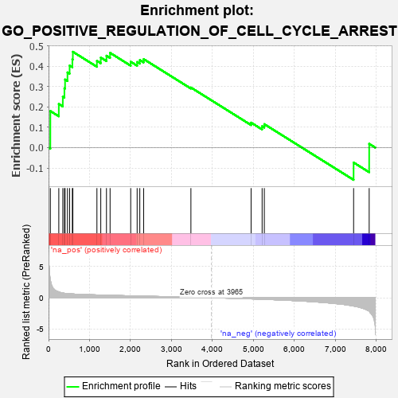
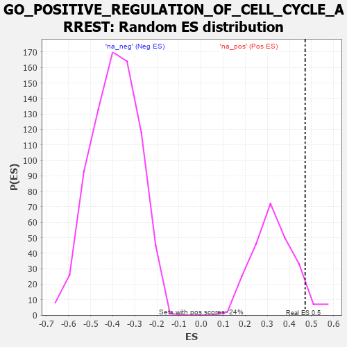

| | | Dataset | 7d |
| Phenotype | NoPhenotypeAvailable |
| Upregulated in class | na_pos |
| GeneSet | GO_POSITIVE_REGULATION_OF_CELL_CYCLE_ARREST |
| Enrichment Score (ES) | 0.47101897 |
| Normalized Enrichment Score (NES) | 1.4266992 |
| Nominal p-value | 0.0661157 |
| FDR q-value | 0.33080825 |
| FWER p-Value | 1.0 |
Table: GSEA Results Summary

Fig 1: Enrichment plot: GO_POSITIVE_REGULATION_OF_CELL_CYCLE_ARREST
Profile of the Running ES Score & Positions of GeneSet Members on the Rank Ordered List
| PROBE | GENE SYMBOL | GENE_TITLE | RANK IN GENE LIST | RANK METRIC SCORE | RUNNING ES | CORE ENRICHMENT | | 1 | PCBP4 | | | 44 | 2.875 | 0.1798 | Yes |
| 2 | INSM1 | | | 250 | 0.939 | 0.2145 | Yes |
| 3 | CNOT7 | | | 348 | 0.750 | 0.2506 | Yes |
| 4 | BAX | | | 387 | 0.711 | 0.2916 | Yes |
| 5 | RRP8 | | | 403 | 0.699 | 0.3348 | Yes |
| 6 | CNOT6 | | | 462 | 0.655 | 0.3697 | Yes |
| 7 | CNOT2 | | | 514 | 0.625 | 0.4035 | Yes |
| 8 | CCNB1 | | | 581 | 0.601 | 0.4340 | Yes |
| 9 | RBL2 | | | 593 | 0.596 | 0.4710 | Yes |
| 10 | TFDP1 | | | 1180 | 0.450 | 0.4263 | No |
| 11 | CNOT3 | | | 1274 | 0.435 | 0.4426 | No |
| 12 | CARM1 | | | 1413 | 0.408 | 0.4516 | No |
| 13 | E2F4 | | | 1501 | 0.390 | 0.4657 | No |
| 14 | FOXO4 | | | 2004 | 0.304 | 0.4222 | No |
| 15 | CNOT4 | | | 2161 | 0.283 | 0.4208 | No |
| 16 | CDK2 | | | 2226 | 0.272 | 0.4302 | No |
| 17 | MED25 | | | 2320 | 0.257 | 0.4351 | No |
| 18 | CNOT1 | | | 3473 | 0.081 | 0.2954 | No |
| 19 | EP300 | | | 4941 | -0.186 | 0.1229 | No |
| 20 | ATM | | | 5210 | -0.249 | 0.1052 | No |
| 21 | CDK1 | | | 5264 | -0.262 | 0.1154 | No |
| 22 | CASP2 | | | 7442 | -1.322 | -0.0732 | No |
| 23 | PKD2 | | | 7822 | -2.167 | 0.0187 | No |
Table: GSEA details [plain text format]

Fig 2: GO_POSITIVE_REGULATION_OF_CELL_CYCLE_ARREST: Random ES distribution
Gene set null distribution of ES for GO_POSITIVE_REGULATION_OF_CELL_CYCLE_ARREST